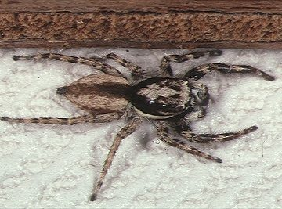

ग्रे वॉल जंपर मकड़ीGray Wall Jumper
Menemerus bivittatus · Salticidae · SPD-0030

- Scientific name वैज्ञानिक नाम
- Menemerus bivittatus (Dufour, 1831)
- Family कुल
- Salticidae
- Hindi हिंदी
- ग्रे वॉल जंपर मकड़ी
- Local names स्थानीय नाम
- gray wall jumper, jumper
- Status here यहाँ की स्थिति
- native
- Movement आवागमन
- Resident, here all year
- Known from कहाँ दर्ज
- Others have published records from the wider Awadh–Purvanchal plain, none yet from Basti–Ayodhya अवध–पूर्वांचल से दूसरों के प्रकाशित अभिलेख, बस्ती–अयोध्या से अभी नहीं
- IUCN IUCN
- not evaluated
- Review समीक्षा
- audited and independently read
When to look कब देखें
Present all year. साल भर मौजूद।
Tell it apart from इनसे अलग पहचानें
ग्रे वॉल जंपर मकड़ी / Gray Wall Jumper
Menemerus bivittatus (Dufour, 1831) — Salticidae
ग्रे वॉल जंपर मकड़ी — दीवारों पर रहने वाली एक धूसर-भूरी कूदने वाली मकड़ी जो सफ़ेद प्लास्टर पर आसानी से दिखाई देती है। कूदने वाली मकड़ी से अधिक धूसर और कम सजी हुई। दोपहर को धूप वाली दीवारों पर सबसे सक्रिय। नर अपने सामने की लंबी पैरों को लहराता है — एक स्पष्ट समझौता व्यवहार।
Quick Identification त्वरित पहचान
| Feature | Description |
|---|---|
| Size | Male 5–6 mm; female 7–8 mm |
| Coloration | Grey-brown to tan; less boldly marked than other wall jumpers |
| Pattern | Two pale longitudinal stripes on abdomen — "bivittatus" = two-striped |
| Eyes | Large forward-facing principal eyes |
| Legs | Male leg I notably elongated and thickened (used in courtship display) |
| Behaviour | Active on sunny walls; diurnal |
Field tip: More subdued coloration than Plexippus paykulli; greyish tone; two-stripe pattern visible. Often found on south-facing sunny walls midday.
Morphology आकारिकी
| Feature | Measurement |
|---|---|
| Male body length | 5–6 mm |
| Female body length | 7–8 mm |
| Legspan | 10–14 mm |
Cephalothorax: Grey-brown, covered in fine hairs.
Abdomen: Grey-brown with two pale longitudinal stripes running the length.
Legs: Relatively stouter and shorter than Plexippus paykulli. Male leg I (front pair) notably elongated and thickened, used in courtship vibrations.
Eyes: Large principal eyes with typical Salticidae arrangement.
Ecological Role पारिस्थितिक भूमिका
Wall-surface predator: Hunts small insects on building surfaces and rock faces. Active visual hunter using stereoscopic vision.
Prey: Small flies, gnats, small spiders, ants.
Thermoregulation: Often seen on sunny walls during midday and early afternoon — may be basking to maintain activity levels in cooler months.
Life Cycle / Phenology जीवन चक्र
| Month | Event |
|---|---|
| Mar–May | Spiderling emergence |
| Jun–Aug | Growth to maturity |
| Sep–Nov | Mating; egg sac laying |
| Nov–Feb | Overwintering as eggs; reduced activity |
Single annual generation.
Agricultural / Human Relevance कृषि प्रासंगिकता
Household predator: Effective pest control on walls. Less specialized for indoor hunting than Plexippus paykulli but still beneficial.
Safety: Completely harmless. Too small to bite humans effectively.
Garden walls: Beneficial on garden walls where small pest insects rest.
Expected Locally स्थानीय रूप से अपेक्षित
Not a field record. Written from published accounts for eastern Uttar Pradesh. No confirmed local sighting yet — if you have seen it, that is what the atlas needs.
अभी तक स्थानीय पुष्टि नहीं। यह विवरण प्रकाशित स्रोतों से है, किसी अवलोकन से नहीं।
Menemerus bivittatus is expected on sunny walls, building surfaces, and rock faces year-round. More active in warm months. Often seen on south-facing walls during midday hours.
Distribution वितरण
Global range: Africa, Europe, and Asia — widely distributed in warm regions.
In India: Common on building surfaces across the country.
In Uttar Pradesh: Recorded on buildings statewide.
In Basti district / eastern UP: Expected on building surfaces year-round.
Research Questions शोध प्रश्न
- Why are these spiders most active on sunny walls at midday? — Temperature preference?
- क्या नर का लंबा पहला पैर नृत्य प्रदर्शन में महत्वपूर्ण है? (Is the male's elongated leg I important in courtship displays?)
- Prey size preferences compared with other wall jumpers?
- Microhabitat preferences (sun vs. shade)?
- Do males defend territories?
Similar Species मिलती-जुलती प्रजातियाँ
| Species | Difference | |
|---|---|---|
| [[pantropical_jumping_spider | Plexippus paykulli]] | Bold black-white pattern; larger |
| [[peters_jumping_spider | Plexippus petersi]] | Black, bold pattern |
Field rule: Subdued grey-brown jumping spider with two pale stripes on wall, especially on sunny sections, = Menemerus bivittatus.
Taxonomy & Classification वर्गीकरण
Original description. Dufour, 1831.
Subspecies. Monotypic.
Family and order placement. Order Araneae, family Salticidae.
IUCN status rationale. Not assessed; common and stable.
Photo Gallery फोटो गैलरी
No photos yet — add field photos to media/species/gray_wall_jumper/ and run node scripts/sync_photos.js.
References संदर्भ
- Dufour, L. (1831). Descriptions et figures microscopiques de quelques insectes. Annales des Sciences Naturelles, Paris.
- Tikader, B.K. & Biswas, B. (1981). Spider fauna of India. Zoological Survey of India.
- Nentwig, W., et al. (2024). Spiders of Europe. www.wsc.nmbe.ch.
- World Spider Catalog. (2024). Retrieved from: http://www.wsc.nmbe.ch
- GBIF Occurrence Data — Menemerus bivittatus, Africa, Europe, and Asia (2000–2024). GBIF taxon key: [to be filled by script].
- Foelix, R.F. (2011). Biology of Spiders (3rd ed.). Oxford University Press.
Source file: species/fauna/spiders/gray_wall_jumper.md